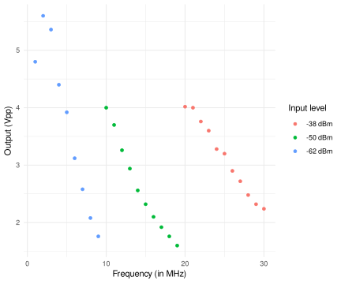
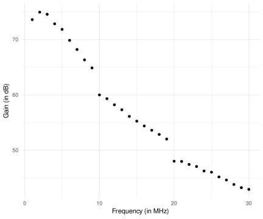

Background
I want to make a meter for my amateur radio station that can log transmitted power, swr, and the transmitted
frequency to a file. For the detector, I’ll use a directional coupler with AD8307 log-amplifiers. I have
submitted the gerber files from DJ0ABR’s site to
JLCPCB, this directional coupler makes the power measurement a matter of the reading
the DC-voltage coming of the forward and reflected log amplifiers. For detecting the frequency of transmission,
and Arduino can easily count the frequency to the accuracy that I need. But the microcontroller needs some
pre-processing to read the frequency from the directional coupler.
The frequency counting issue was addressed by Larry Phipps, N8LP, in his 2006 QEX paper on the LP100.
His solution is to amplify the forward measurement (by a lot), then limiting this, level shifting, and sending
this straight into a microcontroller. If I am to to count using an Arduino, I also need to divide down the frequency
before sending the TTL level signal to the Arduino, but this shouldn’t be a problem (with 74HC14 to square up the RF and an 74HC390 to divide
the frequency down to something the Arduino can count). I figured I should run the frequency detect amplifier of N8LP for a test.
The amplifier in question is a simple 3-transistor class A amplifier like this (with some value substitutions to reflect what I have on hand):

Building the amplifier
I used this as an occasion to try out the construction technology I’ve seen
Thomas Knutsen, LA3PNA, use in a youtube video.
Using the cutter disc that I have for my Dremel, I ended up with this:
Esthetically, this is only a partial success. And since my Dremel cut-off wheel was fairly large (a diameter
of 38mm), it was difficult to avoid overshooting the cuts. And for Q2 and Q3, the T-joint for the
transistors have these overshoot where the collector is intended to go. This made it add some wires to
the installation of these transistors, and the end result is not beautiful. But after some fiddling around,
it seems to work in this fairly ugly state (with 0805 for the capacitors and resistors):
Measurements
Hooking the amplifier up to 12V, it draws around 60mA. I used my HP8657A as a signal source and my Rigol 2072A
oscilloscope
to measure the output (with an 10:1 probe).
The amplifier is fairly high impedance input and intended for a high impedance output.
I used the oscilloscope as the load on the amplifier, and started with the signal generator set to a level of
-60dBm at 1MHz. As expected, the gain of the amplifier dropped off with frequency; I re-adjusted the level out of the frequency generator as I adjusted the frequency from 1MHz to 30MHz. These are my measurements:

The input impedance is high, and the load is also high impedance. To calculate
the gain in terms of voltage alone, I take into account that the input is twice
that of the indicated input power (since it is not divided by two in a 50-ohm termination).
Adjusting for the increasing input power, I calculate the following gain based on the
voltage input and outputs:

The discontinuities at 10 and 20 MHz might be due to compression/distortion at those those levels.
To conclude, the gain of the amplifier is severely decreasing in frequency.
(This is a feature of the design not of weaknesses in my build, it is confirmed
by simulations in LTSpice.) But the amplifier does provide about 43 dB at 30 MHz, sufficient to activate
the frequency counter (?).